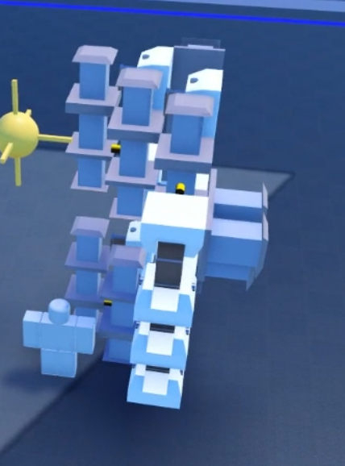

Overview of Optimisation
Optimisation is the reduction of unneeded blocks; this is necessary because you and others can only handle a limited amount of blocks on your shredder. To keep your shredder usable you should attempt to have at least 60 frames per second (use !fps2 command) while using a shredder.
Skeleton Optimisation

There are a few ways to optimise the skeleton of your build, one way is by building in a certain way.
Changing all angle blocks that do not act to compressor blocks will reduce lag. One angle lock is comparable to two compressors.
Making the top of a compressor block not touch another block when possible.
Reducing the amount of welding blocks between and inside of components of your build. Compressors can push out by one block, so sometimes you can cut out blocks using this.
Zippering
Zippering is when you use the drag tool to create welds with an angle block while also bringing the welded pieces to wherever the angle lock is last placed. When used right, it can save many blocks.
Balancing Stats
Balancing your shredder is necessary when working with limited blocks. For example, if you put everything into speed and not armor, if you add armor you will be too laggy.
Blade Design
Blade design can help with optimisation, as its something that uses a lot of blocks. Try keeping your blade to a maximum of 80 blocks, and spacing out your cutters to be more efficiently used. This has more benefits than just optimisation too, which can be seen in blade design.